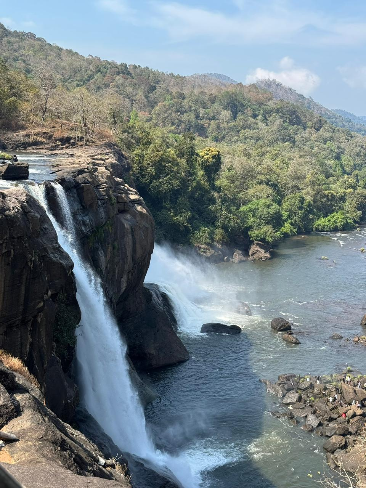
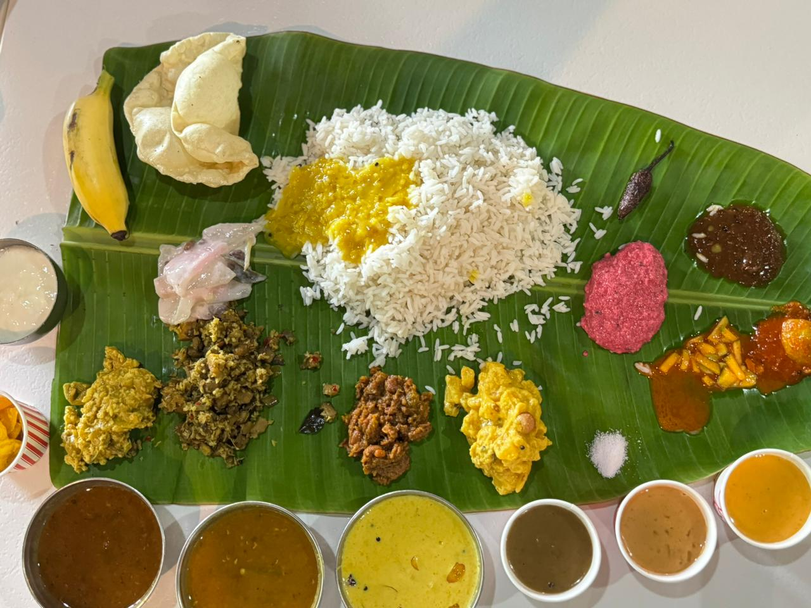
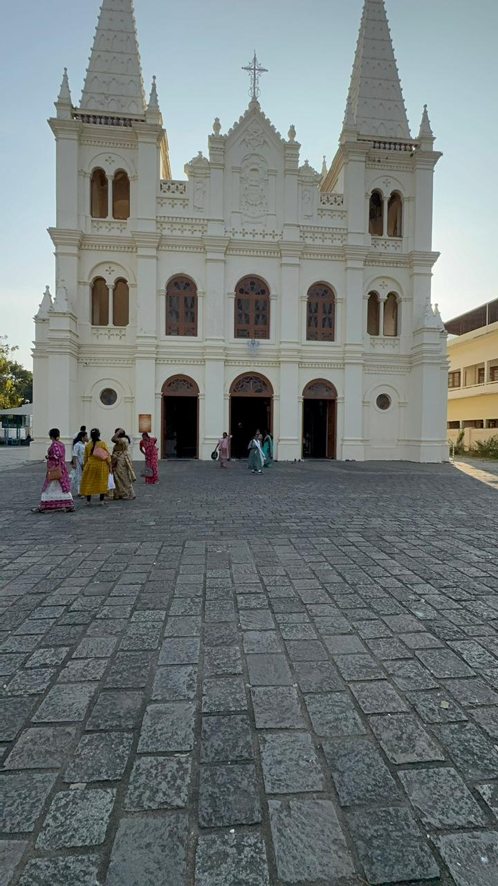
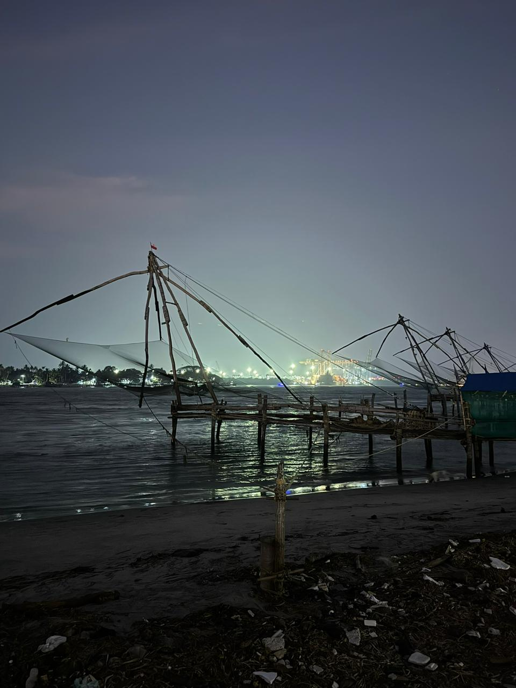
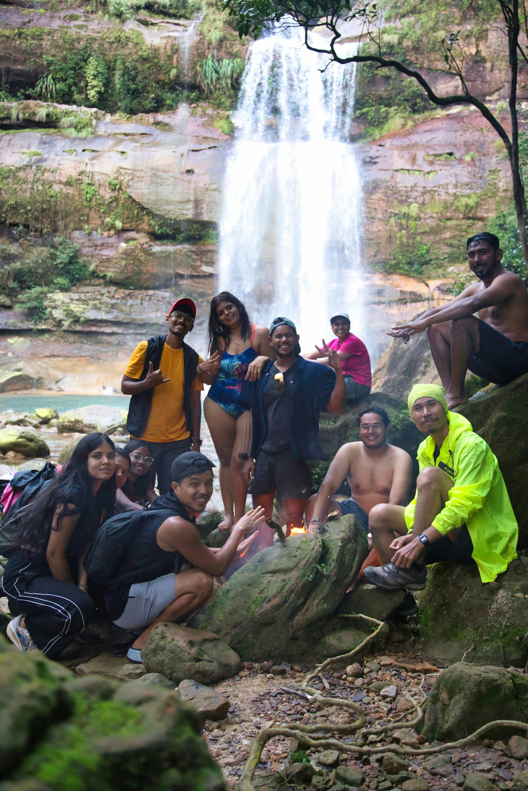
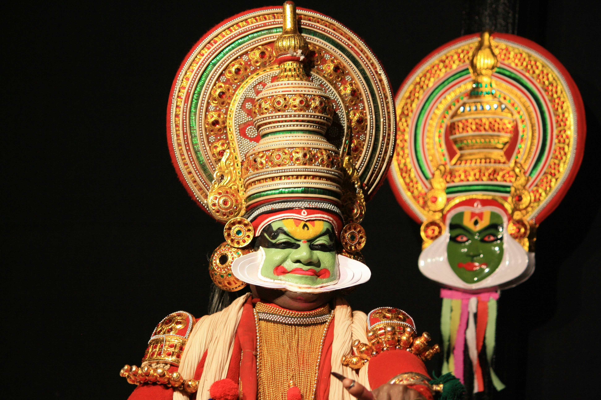

Kerala Trip Itinerary
Day 1: Arrival in Kochi
Explore Fort Kochi, Chinese fishing nets, and local cafes.

Day 2: Munnar
Visit tea plantations, Anamudi peak, and Mattupetty Dam.

Day 3: Alleppey Backwaters
Enjoy houseboat stay and Kerala cuisine.

Day 4: Kumarakom
Relax at Kumarakom bird sanctuary and enjoy backwater views.

Day 5: Thekkady
Visit Periyar Wildlife Sanctuary and spice plantations.

Day 6: Vagamon
Enjoy rolling hills, tea gardens, and trekking opportunities.

Day 7: Wayanad
Visit waterfalls, caves, and spice plantations in Wayanad.

Day 8: Kovalam Beach
Relax on golden sands, try local seafood, and enjoy sunset views.

Day 9: Departure from Trivandrum
Visit local markets or temples before departing Kerala.
